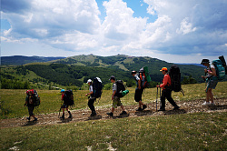

Туризм
Туризм - это путешествие, совершаемое человеком в свободное от основной работы время в оздоровительных, познавательных, профессионально-деловых, спортивных, религиозных и иных целях. Это один из видов активного отдыха, наилучший способ отвлечься от суеты, увидеть новое и интересное, набраться положительных эмоций. Туризм дает возможность познакомиться с культурой других стран и регионов, удовлетворяет любознательность человека, обогащает его духовно, оздоровляет физически, способствует развитию личности. Он позволяет совмещать отдых с познанием нового.
Условия развития
Мировой опыт свидетельствует, что для динамичного развития туризма необходимы следующие условия:
- стабильная социально-экономическая ситуация (в мире в целом, в отдельной стране и конкретном регионе);
- отсутствие административно-чиновничьих барьеров при перемещениях через границы и в период гостевого пребывания;
- притягательные рекреационные ресурсы (природно-климатические и культурно-исторические);
- развитая инфраструктура туризма и квалифицированные кадры;
- высокий уровень сервиса, обеспечение комфортного проживания, гостеприимство, культура и профессионализм персонала;
- комфортабельный и безопасный транспорт, надежная связь;
- свобода перемещения и гарантии прав путешествующих, обеспечение их безопасности;
- высокая ответственность туристских организаций и их структурных подразделений за проведение конкретных туров;
- положительный туристский имидж территории, высокая репутация обслуживающих туристов фирм и компаний.
Основные особенности
Можно выделить несколько основных особенностей туристской деятельности.
Первая и наиболее значимая заключается в том, что, в отличие от отраслей материального производства,
индустрия туризма экспортирует не продукт, а впечатления. Чтобы лучше раскрыть эту особенность, приведем
пример.
Можно экспортировать 1 т нефти, скажем, за 100-150 дол. При этом проданная нефть уйдет за пределы
страны, а в земных недрах ее запасы уже не восстановятся. Номер в первоклассной гостинице тоже может
приносить 100-150 дол., но каждый день! За год он может дать десятки тысяч долларов, избавив от
необходимости экспортировать семь-восемь железнодорожных цистерн нефти. То же относится к экспорту других
невозобновляемых природных ресурсов. Турист же ничего из страны не увозит, кроме впечатлений (продукта
виртуального), а оставляет вполне материальный - деньги.
Классификация
Классификация туризма
- Классификационный признак
- Вид туризма
- География путешествий
- Внутренний Международный (иностранный)
- Направление туристского потока
- Въездной Выездной Внутренний